Identify economic externalities and apply conditional welfare criteria
Explanation, worked examples and practice
Useful first: Trace material, waste and utility paths
Outcome and conditions
Identify the externality before proposing a remedy Types and boundaries What welfare criteria can establish The next-chapter fragment included in the file
Study conditions, assessment scope and sources
Classify a neglected real welfare relationship and distinguish actual versus potential welfare improvement with stated boundaries. Required components: neglected_real_effect_and_types, pareto_and_compensation_tests, intervention_and_risk_boundaries. Supported work may use the cited notes; independent checks use no notes, internet, solution or hints. A basic calculator and blank paper are allowed; reasoning, formula selection and assumptions must be supplied by the learner. Numerical examples below are agent-created hypothetical instantiations unless explicitly labelled as a finished-note example. They do not assert current market or policy facts.
Prerequisites and checks
Check the prerequisites
O005-P1 / item_version 1: O002 is needed because material/utility paths identify whose wellbeing can change. Prompt: Does a waste arrow alone prove another person loses welfare? Key: No; trace exposure/utility and whether the actor considers it, rather than infer harm from physical movement alone. Pass requires the keyed mechanism and qualification; partial means an omitted step; fail means a conflicting mechanism. Adequate committed evidence under a compatible criterion permits skipping this diagnostic. Otherwise repair through Outcome and conditions before continuing.
Motivation and explanation
Start with the decision maker (supplier), affected receptor and real variable in utility or production. The effect must be omitted from that decision for this technological-externality framework. Physical changes, competitive price effects and deliberate reciprocal/altruistic relations must be distinguished; social/private benefits of transport do not erase an external wedge. Effects differ by sign, production/consumption origin, spatial reach (local or global), temporal reach (current or intergenerational), depletability and recipient structure. These dimensions require separately stated facts; location or activity alone does not imply a particular magnitude. Congestion shows an actor can also be a receptor. A strict Pareto improvement has at least one gain and no loss. Pareto efficiency says no feasible such improvement remains, not that distribution is uniquely fair. Kaldor accepts if winners could compensate afterwards; Hicks if initial losers could not compensate winners sufficiently to prevent the change. These potential tests do not require payment. Competitive welfare theorems are conditional and equity/merit arguments are separate; a remedy also incurs costs. The supplied risk opening distinguishes event probability/severity and defensive choices from compensating insurance, without a complete later model.
Read the full explanation
Reading context
Deliver these complete reused passages before the worked example; earlier concise prompts are checkpoints, not substitutes. Necessary prerequisites use the complete prepared lessons specified above.
Source passage
Origin: reused complete checked passage Identify the externality before proposing a remedy; fingerprint 529d959710600922cf0919bc4bb77ccd698aa1e4c411e91dcc19de2023f47e39. Heading depth alone is adapted.
Identify the externality before proposing a remedy
The chapter's definition has two actors: a supplier whose action determines a real variable and a receptor whose utility or production function depends on it. The supplier does not account for that effect in choosing the action. Noise, contaminated water or air quality can be such real variables. An upstream factory that discharges waste, reduces dissolved oxygen and fish stocks, and harms downstream anglers illustrates the mechanism. If downstream welfare does not enter the factory's decision, the private return from production remains higher than its social return. The lecture also presents the uncompensated-welfare-loss wording of an external cost. The definition used in the chapter makes the neglected real relationship central; compensation and incentives require separate analysis. Lecture, physical PDF pp. 3,5–6 Verhoef Externalities, physical PDF pp. 3,5
A physical environmental change without a utility or production consequence does not establish an economic externality. An unpriced relationship is also insufficient. Barter can exchange benefits implicitly, and altruism deliberately takes another person's pleasure into account. The chapter excludes deliberate violence, jealousy and promotion from its externality category as well. This is a classification of the argument for efficiency correction, not approval of harmful conduct or a claim that policy has no equity or other rationale. Lecture, physical PDF pp. 7–10 Verhoef Externalities, physical PDF p. 3
Pecuniary effects operate through prices in existing markets. A change in transport or input prices moves a consumer along a given demand/utility relationship rather than creating the technological shift represented by an externality. Under the competitive assumptions here, the market already transmits these effects. Greater consumer surplus from cheaper output can be valuable without being an external benefit. Employment and value added in related industries are likewise not evidence that excessive externality-generating activity should be encouraged. Infrastructure investment and the actual use of infrastructure need separate assessments. The transport note develops these distinctions. Lecture, physical PDF pp. 9–10,19 Verhoef Externalities, physical PDF pp. 3–5
Types and boundaries
Positive versus negative refers to the receptor's benefit or loss, while production versus consumption refers to the originating activity. Spatial neighbourhood, partial/global and intergenerational classifications identify the reach of the effect. The lecture also lists effects involving several interacting uses, such as fishing, boating and swimming, and marginal versus inframarginal effects. These classifications identify which relationships require measurement; the lecture supplies no separate formal model for every category. Lecture, physical PDF p. 12
A depletable effect differs from an undepletable effect in whether one receptor's consumption changes what is available to others. An undepletable externality has public-good or public-bad characteristics alongside the externality. The chapter reports that this distinction does not require different Pigouvian pricing rules by itself, but can make voluntary bargaining vulnerable to strategic behaviour and free riding. In congestion, an actor can simultaneously cause and receive effects; the appropriate individual-level incentive does not disappear merely because the harm stays inside the road-user sector. Verhoef Externalities, physical PDF pp. 3,6–7 Lecture, physical PDF pp. 12,27
Source passage
Origin: reused complete checked passage What welfare criteria can establish; fingerprint 529d959710600922cf0919bc4bb77ccd698aa1e4c411e91dcc19de2023f47e39. Heading depth alone is adapted.
What welfare criteria can establish
A Pareto improvement makes at least one person better off without making anyone worse off. A Pareto-efficient allocation leaves no feasible rearrangement that everyone weakly prefers, with somebody strictly preferring it. These criteria make relatively little use of interpersonal welfare comparisons, but they cannot rank alternative efficient allocations with different distributions. Verhoef contrasts them with potential Pareto or compensation criteria: the winners could compensate the losers so that a Pareto improvement becomes possible. The Kaldor criterion accepts the change if its winners could compensate its losers afterwards. The Hicks criterion accepts it if the initial losers could not compensate the winners sufficiently to prevent the change. These are differently directed compensation tests, not a requirement that a transfer actually occurs. Actual compensation is not required by the potential criterion. Therefore a positive aggregate net benefit can coexist with people who lose. Verhoef Externalities, physical PDF p. 2
Under the conditions of the first welfare theorem, a competitive equilibrium is Pareto efficient; the second theorem relates alternative efficient allocations to appropriate endowment distributions. The chapter also relates maxima of Paretian, welfaristic social welfare functions to efficiency and, under concavity, the converse with suitable welfare weights. These are conditional results. Increasing returns, market power, external effects, public goods and imperfect information can prevent their usual competitive conclusion. Equity and merit-good arguments are additional rationales for intervention, distinct from a demonstration of market failure. A failure identifies a possible efficiency rationale; an intervention still needs gains exceeding its costs. The chapter calls a technological externality potentially Pareto relevant when correcting it costs less than the available welfare gain. Verhoef Externalities, physical PDF pp. 2–3 Lecture, physical PDF pp. 4,22
Source passage
Origin: reused complete checked passage The next-chapter fragment included in the file; fingerprint 529d959710600922cf0919bc4bb77ccd698aa1e4c411e91dcc19de2023f47e39. Heading depth alone is adapted.
The next-chapter fragment included in the file
Physical PDF p. 10 includes printed p. 215, the opening of “Endogenous environmental risk” by Crocker and Shogren. It defines risk through an event's likelihood and severity and explains how defensive choices can alter these, particularly when insurance/contingent-claims markets are incomplete. Examples include boiling contaminated drinking water, filtering water, changing outdoor activity and using sunscreen. Insurance compensates an insured loss; it does not by itself change the probability. Defining only contamination as a fixed state can hide the household's ability to change the risk of illness through boiling. This is an additional supplied fragment, not the full chapter, and contains no complete risk model or later argument to reconstruct. Verhoef Externalities, physical PDF p. 10
Source passage
Origin: reused complete checked passage Topic map of the Verhoef chapter; fingerprint 529d959710600922cf0919bc4bb77ccd698aa1e4c411e91dcc19de2023f47e39. Heading depth alone is adapted.
Topic map of the Verhoef chapter

Source-grounded topic map of the chapter “Externalities,” physical PDF pp. 1–9 (printed pp. 197–213). The printed p. 214 references and the next-chapter fragment on physical p. 10 are accounted for below. Verhoef Externalities, physical PDF pp. 1–9
Source passage
Origin: reused complete checked passage What to retain; fingerprint 529d959710600922cf0919bc4bb77ccd698aa1e4c411e91dcc19de2023f47e39. Heading depth alone is adapted.
What to retain
Identify a neglected real welfare relationship before applying externality policy. In the smooth first-best model, compare social marginal benefit and social marginal cost; optimal damage can remain positive. Compensation, internalization and regulation have different incentive and distribution effects. The efficiency optimum is conditional and cannot by itself settle fairness, income-sensitive valuation or political feasibility. Verhoef Externalities, physical PDF pp. 3–9 Lecture, physical PDF pp. 20–28
Worked example
O005-W1 / item_version 1, worked_example. Prompt: Given hypothetical cases: (a)factory discharge reduces an angler’s utility, explicitly omitted from the supplier’s decision; (b)cheaper production lowers a product price through ordinary competitive prices without an unpriced real effect; (c)a friend deliberately enjoys helping another friend, deliberately considered by the actor. Classify each using supplier/receptor/real-variable/neglected-effect criteria; explain why a physical change alone is insufficient and what depletable/public-bad and congestion distinctions mean. In three additional hypothetical omitted-effect cases, the household actions are consumption and the mine/farm/workshop/factory/plant/forest actions are production. Classify sign, origin and spatial/temporal reach from the declared effects: a factory’s smoke harms nearby households today; a household’s ornamental garden benefits a local neighbour in the next generation; a factory’s greenhouse emissions harm people worldwide in future generations. A separate money-valued policy gives winners \(20\), losers \(-10\); within this declared transferable-money illustration explain strict Pareto, Kaldor and Hicks acceptance directions and apply them without assuming actual compensation. State why market-failure and welfare-theorem conditions do not automatically justify any intervention. Distinguish defensive reduction of environmental illness risk from insurance compensation using the supplied next-chapter fragment, and limit the inference to that fragment.
Steps and interpretation: (a) is a technological externality: identify the supplier action, other person’s utility/production affected through the specified real variable, and its omission. (b) is a pecuniary market effect under the stated competitive boundary, not that externality; ordinary price transmission already enters decisions. (c) is an intentionally considered unpriced relation, so omission is absent; unpriced alone is not enough. The additional cases are respectively negative/production/local/current; positive/consumption/local/intergenerational; negative/production/global/intergenerational. Classification follows the declared origin and recipients/timing; it does not estimate magnitude or prove the effect exists in an actual case. A physical alteration without welfare effect does not meet the definition. Depletable/rival benefit can be used up; an undepletable public bad affects many simultaneously and creates coordination/free-rider problems. Congestion can be caused and received by the same road users but remains external to the individual actor. With gains \(20\) and loss \(10\), net \(10>0\) but losers remain: no strict Pareto improvement absent compensation. Kaldor accepts if winners could compensate afterwards; here \(20>10\). Hicks accepts if initial losers cannot compensate winners enough to prevent it; under this explicitly transferable-money example their \(10\) is insufficient against \(20\). Actual transfer is not required by these potential criteria and redistribution/equity remains separate. Conditional competitive welfare results can fail with externalities, public goods, market power, increasing returns or information limits; correction costs must be compared with possible gain, so identifying failure is not universal policy approval. Boiling contaminated water can change illness likelihood; risk includes likelihood and severity, while insurance compensates a loss without itself changing probability. The supplied page is only an opening fragment, not a complete risk model.
Supported completion
Write your reasoning, then reveal the complete key to check each step.
A local draft for your own study.
Reveal explanation
Key: (a) is a technological externality: identify the supplier action, other person’s utility/production affected through the specified real variable, and its omission. (b) is a pecuniary market effect under the stated competitive boundary, not that externality; ordinary price transmission already enters decisions. (c) is an intentionally considered unpriced relation, so omission is absent; unpriced alone is not enough. The additional cases are respectively negative/production/local/current; negative/consumption/global/intergenerational; positive/production/local/current. Classification follows the declared origin and recipients/timing; it does not estimate magnitude or prove the effect exists in an actual case. A physical alteration without welfare effect does not meet the definition. Depletable/rival benefit can be used up; an undepletable public bad affects many simultaneously and creates coordination/free-rider problems. Congestion can be caused and received by the same road users but remains external to the individual actor. With gains \(30\) and loss \(12\), net \(18>0\) but losers remain: no strict Pareto improvement absent compensation. Kaldor accepts if winners could compensate afterwards; here \(30>12\). Hicks accepts if initial losers cannot compensate winners enough to prevent it; under this explicitly transferable-money example their \(12\) is insufficient against \(30\). Actual transfer is not required by these potential criteria and redistribution/equity remains separate. Conditional competitive welfare results can fail with externalities, public goods, market power, increasing returns or information limits; correction costs must be compared with possible gain, so identifying failure is not universal policy approval. Boiling contaminated water can change illness likelihood; risk includes likelihood and severity, while insurance compensates a loss without itself changing probability. The supplied page is only an opening fragment, not a complete risk model.
Allowed support: show the named definition or equation in Motivation and explanation, then ask for the missing substitution and interpretation. At most two hints: first identify the relevant distinction; second point to the first keyed step. Reveal the worked solution if those fail. Supported success does not establish acquisition. Fade assistance only once the learner explains the keyed steps; then hide the solution and use an unused full check.
Rubric and independence
Self-assessment criteria and tutor checks
Pass requires every listed component, all requested outputs and essential keyed reasoning without a critical conceptual error. Algebraically equivalent formulas, explicitly defined opposite cash-flow signs and equivalent plain-language reasoning are accepted. Partial means a missing component or a correct method with an unresolved isolated arithmetic slip; fail means the central mechanism or condition is wrong. Unscorable means the response or help/exposure conditions cannot be established. Unknown conditions never certify independence. Arithmetic slips require independent correction before a pass. No numerical grade is invented.
Critical errors: Any unpriced/physical/price effect automatically external; positive aggregate benefit establishes no losers; Hicks acceptance reversed; market failure proves every remedy worthwhile; risk fragment promoted to full model.
Acquisition requires two distinct unassisted passes from I1/I2/D1/D2 using the exact six routes in metadata. Each full prompt and key covers every component; any pair therefore covers the whole outcome twice. A fresh D item used for acquisition cannot later certify delayed retention. Worked/support/prerequisite items and the narrow C1 correction cannot substitute for a full check. The finite bank must not be reused after exposure; request a plan_issue when fewer than two fresh full items remain.
| Component | I1 | I2 | D1 | D2 |
|---|---|---|---|---|
| neglected_real_effect_and_types | required | required | required | required |
| pareto_and_compensation_tests | required | required | required | required |
| intervention_and_risk_boundaries | required | required | required | required |
Misconceptions and correction
If gain totals are called Pareto improvement, identify the actual loser before discussing possible transfers. If an unpriced act is called external, check whether it was intentionally considered. Observe the learner's reasoning before diagnosing: a sign or omitted word alone is tentative. Score before help. O005-C1 / item_version 1, narrow_correction. Fresh prompt: Fresh narrow check: winners gain 12, losers lose5, no transfer. Strict Pareto and Kaldor? Key and rubric: No strict Pareto because an actual loser exists. In the declared transferable-money case winners could compensate5 from12, so Kaldor accepts without asserting payment. Pass only if the keyed repaired component is supplied; partial for an omission or arithmetic slip; fail for the same conflicting mechanism. C1 is not a full independent check. After two ineffective hints show the relevant worked step; after another failed correction pause and return to the named prerequisite or explanation.
Immediate and delayed checks
All items are item_version 1 and full_capability_check. I1/I2 are immediate forms; D1/D2 are distinct delayed forms. Delayed success requires an unused unassisted item before recap, at least 24 actual elapsed hours after acquisition and the most recent relevant teaching/solution exposure, with intervening exposure recorded. A date change alone does not qualify. Early D attempts may be acquisition checks only. Each item is a bounded parallel or near-context variant, not proof of broad transfer. Each key states the full required response; do not improvise extra variants.
A local draft for your own study.
Reveal explanation
Key and essential rubric: (a) is a technological externality: identify the supplier action, other person’s utility/production affected through the specified real variable, and its omission. (b) is a pecuniary market effect under the stated competitive boundary, not that externality; ordinary price transmission already enters decisions. (c) is an intentionally considered unpriced relation, so omission is absent; unpriced alone is not enough. The additional cases are respectively negative/production/local/current; positive/consumption/local/intergenerational; negative/production/global/intergenerational. Classification follows the declared origin and recipients/timing; it does not estimate magnitude or prove the effect exists in an actual case. A physical alteration without welfare effect does not meet the definition. Depletable/rival benefit can be used up; an undepletable public bad affects many simultaneously and creates coordination/free-rider problems. Congestion can be caused and received by the same road users but remains external to the individual actor. With gains \(40\) and loss \(15\), net \(25>0\) but losers remain: no strict Pareto improvement absent compensation. Kaldor accepts if winners could compensate afterwards; here \(40>15\). Hicks accepts if initial losers cannot compensate winners enough to prevent it; under this explicitly transferable-money example their \(15\) is insufficient against \(40\). Actual transfer is not required by these potential criteria and redistribution/equity remains separate. Conditional competitive welfare results can fail with externalities, public goods, market power, increasing returns or information limits; correction costs must be compared with possible gain, so identifying failure is not universal policy approval. Boiling contaminated water can change illness likelihood; risk includes likelihood and severity, while insurance compensates a loss without itself changing probability. The supplied page is only an opening fragment, not a complete risk model. All components are required.
A local draft for your own study.
Reveal explanation
Key and essential rubric: (a) is a technological externality: identify the supplier action, other person’s utility/production affected through the specified real variable, and its omission. (b) is a pecuniary market effect under the stated competitive boundary, not that externality; ordinary price transmission already enters decisions. (c) is an intentionally considered unpriced relation, so omission is absent; unpriced alone is not enough. The additional cases are respectively negative/consumption/local/current; positive/production/global/intergenerational; negative/production/local/intergenerational. Classification follows the declared origin and recipients/timing; it does not estimate magnitude or prove the effect exists in an actual case. A physical alteration without welfare effect does not meet the definition. Depletable/rival benefit can be used up; an undepletable public bad affects many simultaneously and creates coordination/free-rider problems. Congestion can be caused and received by the same road users but remains external to the individual actor. With gains \(50\) and loss \(20\), net \(30>0\) but losers remain: no strict Pareto improvement absent compensation. Kaldor accepts if winners could compensate afterwards; here \(50>20\). Hicks accepts if initial losers cannot compensate winners enough to prevent it; under this explicitly transferable-money example their \(20\) is insufficient against \(50\). Actual transfer is not required by these potential criteria and redistribution/equity remains separate. Conditional competitive welfare results can fail with externalities, public goods, market power, increasing returns or information limits; correction costs must be compared with possible gain, so identifying failure is not universal policy approval. Boiling contaminated water can change illness likelihood; risk includes likelihood and severity, while insurance compensates a loss without itself changing probability. The supplied page is only an opening fragment, not a complete risk model. All components are required.
A local draft for your own study.
Reveal explanation
Key and essential rubric: (a) is a technological externality: identify the supplier action, other person’s utility/production affected through the specified real variable, and its omission. (b) is a pecuniary market effect under the stated competitive boundary, not that externality; ordinary price transmission already enters decisions. (c) is an intentionally considered unpriced relation, so omission is absent; unpriced alone is not enough. The additional cases are respectively negative/production/local/current; positive/consumption/global/intergenerational; negative/production/local/intergenerational. Classification follows the declared origin and recipients/timing; it does not estimate magnitude or prove the effect exists in an actual case. A physical alteration without welfare effect does not meet the definition. Depletable/rival benefit can be used up; an undepletable public bad affects many simultaneously and creates coordination/free-rider problems. Congestion can be caused and received by the same road users but remains external to the individual actor. With gains \(60\) and loss \(25\), net \(35>0\) but losers remain: no strict Pareto improvement absent compensation. Kaldor accepts if winners could compensate afterwards; here \(60>25\). Hicks accepts if initial losers cannot compensate winners enough to prevent it; under this explicitly transferable-money example their \(25\) is insufficient against \(60\). Actual transfer is not required by these potential criteria and redistribution/equity remains separate. Conditional competitive welfare results can fail with externalities, public goods, market power, increasing returns or information limits; correction costs must be compared with possible gain, so identifying failure is not universal policy approval. Boiling contaminated water can change illness likelihood; risk includes likelihood and severity, while insurance compensates a loss without itself changing probability. The supplied page is only an opening fragment, not a complete risk model. All components are required.
A local draft for your own study.
Reveal explanation
Key and essential rubric: (a) is a technological externality: identify the supplier action, other person’s utility/production affected through the specified real variable, and its omission. (b) is a pecuniary market effect under the stated competitive boundary, not that externality; ordinary price transmission already enters decisions. (c) is an intentionally considered unpriced relation, so omission is absent; unpriced alone is not enough. The additional cases are respectively negative/consumption/local/current; negative/production/global/intergenerational; positive/production/local/intergenerational. Classification follows the declared origin and recipients/timing; it does not estimate magnitude or prove the effect exists in an actual case. A physical alteration without welfare effect does not meet the definition. Depletable/rival benefit can be used up; an undepletable public bad affects many simultaneously and creates coordination/free-rider problems. Congestion can be caused and received by the same road users but remains external to the individual actor. With gains \(70\) and loss \(30\), net \(40>0\) but losers remain: no strict Pareto improvement absent compensation. Kaldor accepts if winners could compensate afterwards; here \(70>30\). Hicks accepts if initial losers cannot compensate winners enough to prevent it; under this explicitly transferable-money example their \(30\) is insufficient against \(70\). Actual transfer is not required by these potential criteria and redistribution/equity remains separate. Conditional competitive welfare results can fail with externalities, public goods, market power, increasing returns or information limits; correction costs must be compared with possible gain, so identifying failure is not universal policy approval. Boiling contaminated water can change illness likelihood; risk includes likelihood and severity, while insurance compensates a loss without itself changing probability. The supplied page is only an opening fragment, not a complete risk model. All components are required.
Content provenance and generation boundaries
Sources and scope
Complete checked-note passages above are reused with only heading-depth and explicit mathematical typography adaptation; exact origin/fingerprint and asset dependencies are in source_manifest.md. All earlier plan-created exercises/full keys and named evidence routes remain intact. Hypothetical arithmetic instantiates the included definitions and does not introduce empirical results or new academic claims. Only named prepared full-capability forms and their existing permitted pairs can certify acquisition/delayed evidence. Extra checked explanation/practice cannot replace a named full form or reassessment gate. Equivalent verified methods may meet the unchanged pre-answer criterion; ambiguous criteria or an exhausted fresh bank return to plan. The current objective revision is 2; item/criterion versions remain as explicitly stated above.